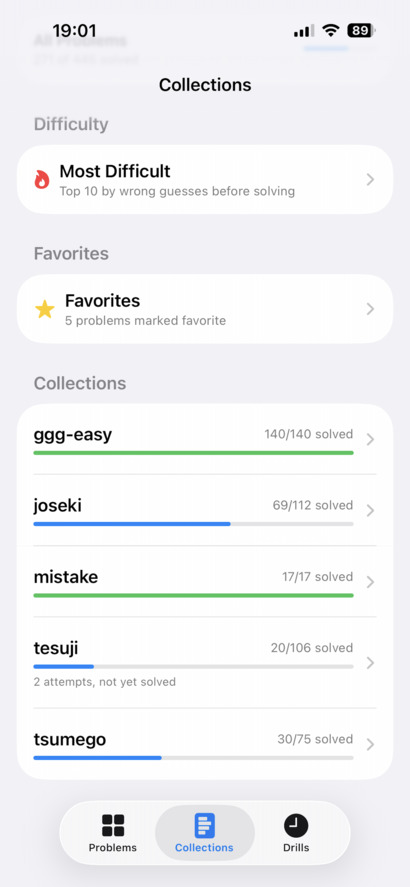
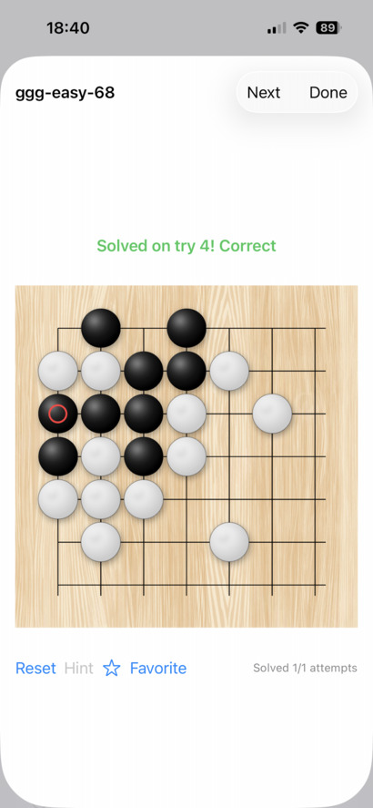

Mr Go Problem Workout Support Page


MrGoProblemWorkout -- iOS app for practicing go problems
MrGoProblemWorkout is for go players wanting to improve their strength through repetitive problem solving. Import SGF files, one problem per file. You can import an entire directory (folder) or a ZIP archive of problem files. You can also create and run timed drills for further motivation.

For support, email mrmrsupport@protonmail.me
Zipped problem file collections for importing (courtesy of benjaminmantle's baduk-study-material):
Additional SGF problem files are available from gogameguru sgfs on githubVersion History:
Version 1.0 -- Original releaseVersion 1.1 -- Refined board cropping; added next button to solverview; other misc fixes
Version 1.2 -- Changed drill settings to min/max; added version to splash screen; other misc fixes
Version 1.3 -- Some cosmetic fixes; added reset all menu item and reset swipe action to most difficult collection; bug fix for 'next' button in some collections
Version 1.4 -- Fixed end-of-problem-next-move bug; added 'unresolved paths' control to settings; created maintenance menu & unresolved path problem report
Version 1.5 -- Added filters & tags to drill creation problem pool; added dynamic pseudo-collection favorites; let user tag prob as fav upon successful solve; fix display so search bar doesn't scroll with problem list; outline reset, hint & fav buttons in solverview, allow removing items from fav collection, celebrate new best time completing drills; changed success sound behavior in drills; added support site url to aboutview; fixed board cropping bug in gamestate where markers were outside cropped board area; Lengthened slightly display of wrongAttempt message; added confetti animation to best new time in drillrunnerview; notify user when importing a collection with name that matches existing collection
Privacy Notice:
Last modified 14-August-2026This privacy policy ("Policy") explains how the developer, Frank, collects, uses, and protects information you provide when using MrGoProblemWorkout. Frank reserves the right to update this Policy at any time.
What user data is collected?
The MrGoProblemWorkout app does not collect any data from the user or their device:- NO Personal Information
- NO Device Information
- NO App Usage Data
- NO Location Data
- NO Other Data of any kind!
Why we do NOT collect your data
There is no reason to collect data because this app is merely a tool for practicing go problems. Collecting user data would be unnecessary and potentially harmful.Permissions and Device Access
MrGoProblemWorkout does NOT access any special features of your device, including:- Camera & Photos
- Microphone
- Contacts
- Location